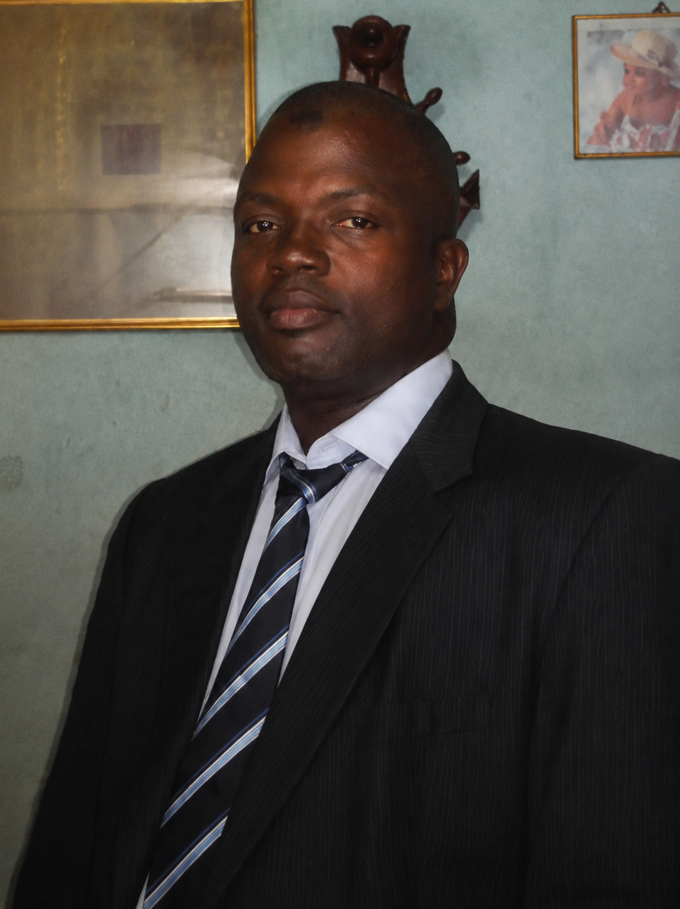

Un savoir-faire construit par 30 ans d'expérience
Une carrière consacrée à la mécanique automobile et au travail bien fait.

M. Touré
Responsable et patron du Garage K.K (Ivoire Compétence), M. Touré possède une expérience de plus de 30 années dans le domaine de la mécanique automobile.
Un parcours construit avec passion Responsable et patron du Garage K.K (Ivoire Compétence), M. Touré possède plus de 30 ans d'expérience dans la mécanique automobile. Formé auprès de AKRA BOY, il obtient son certificat de mécanicien en 1992. Il poursuit ensuite son expérience pendant deux années supplémentaires avant de franchir une grande étape en 1994 : l'ouverture de son propre garage. Depuis, il n'a cessé de perfectionner son savoir-faire, avec une seule priorité : la qualité du travail et la satisfaction du client. Pour lui, la mécanique n'est pas seulement un métier, c'est une passion et une responsabilité. Comme il aime si bien le dire avec le sourire 😂 : «« On ne travaille pas gbroume-gbroume… c'est ta finition qui détermine ton efficacité ! »» Une philosophie simple qui résume plus de 30 années de passion, d'efforts et de persévérance. 🔧🏆